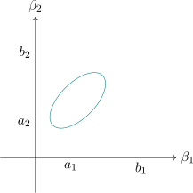

3.6 Simultaneous Confidence Intervals and Multiple Comparison
A significant \(F\) says that the treatment means are not all equal. It does not say which differ, and that is usually the question the experiment was run to answer.
The difficulty is multiplicity. Each interval computed at \(95\%\) confidence fails \(5\%\) of the time, so with ten intervals the chance that at least one is wrong is far above \(5\%\). Three remedies follow — Bonferroni, Scheffé and Tukey — and they differ in what they cover. Bonferroni covers a fixed list named in advance; Tukey covers all pairwise differences; Scheffé covers every contrast whatever, including those suggested by the data. The wider the guarantee, the wider the intervals, and choosing among them is a matter of deciding honestly what will be looked at.
One-dimensional case
Let \(C\) be a known \(K\times 1\) vector of constants. We want a \(100(1-\alpha )\%\) confidence interval for \(\underbrace {C^t}_{1\times K}\underbrace {B}_{K\times 1}\).
Let \(\text {MSE}=\frac {Y^t\big (I-H\big )Y}{N-K}\), mean squared error then \(\hat {B}\) the least squares estimator of \(B\) in the linear model
\[Y=XB+\varepsilon ,\quad E(\varepsilon )=0,\quad Cov(\varepsilon )=\sigma ^2I\]
\(X\) to be full column rank matrix. \(\hat {B}\) and MSE are independent (probability) since there are functions of
projections onto orthogonal spaces.
\[\widehat {B}\thicksim N\big (B,\sigma ^2\big (X^tX\big )^{-1}\big )\] \begin {align*} C^tB & \thicksim \Big (C^tB,C^tCov\big (\widehat {B}\big )C\Big )\\ & \thicksim N\Big (C^tB, C^t\sigma ^2\big (X^tX\big )^{-1}C\Big )\\ & \thicksim N\Big (C^tB, \sigma ^2\underbrace {C^t}_{1\times k}\underbrace {\big (X^tX\big )^{-1}}_{k \times k} \underbrace {C}_{k\times 1}\Big ) \end {align*}
\begin {align*} \frac {C^t\widehat {B}-C^tB}{\sqrt {\sigma ^2C^t\big (X^tX\big )^{-1}C}} & \thicksim N(0,1)\\ \frac {C^t\widehat {B}-C^tB}{\sqrt {\text {MSE}\, C^t\big (X^tX\big )^{-1}C}} & \thicksim t_{N-K}\\ \end {align*}
\(\therefore \) The \(100(1-\alpha )\%\) C.I for \(C^tB\) is \[C^t\widehat {B}\pm t_{\frac {\alpha }{2},N-K}\sqrt {\text {MSE}\,C^t\big (X^tX\big )^{-1}C}\]
- a).
- If we want \(100(1-\alpha )\%\) for \(\beta _j\)
Let \(C= \begin {pmatrix} 0 & 0 & \cdots & 0 & 1 & 0 & \cdots \\ \end {pmatrix}^t ,\quad C^tB=\beta _j\).
\(\widehat {\beta }_j\pm t_{\frac {\alpha }{2},N-K}\sqrt {\text {MSE}\,C^t\big (X^tX\big )^{-1}C}\), \(j^{\text {th}}\) diagonal element of \(\big (X^tX\big )^{-1}_{jj}\).
- b).
- If we want \(100(1-\alpha )\%\) C.I for \(\beta _j-\beta _{j'},\, j\neq j'\).
Let \(C-\) should be such that it has 1 on the \(j^{\text {th}}\) position, \(-1\) on the \(j'^{\text {th}}\) position and zeroes elsewhere. If we assume \(j<j'\) \[C= \begin {pmatrix} 0 & 0 & \cdots & \underbrace {1}_{j} & 0 &\cdots & \underbrace {-1}_{j'} & \cdots & 0\\ \end {pmatrix}^t \] \(100(1-\alpha )\%\) C.I for \(\beta _j-\beta _{j'}\) is given by \[C^t\widehat {B}\pm t_{\frac {\alpha }{2},N-K}\sqrt {\text {MSE}\,C^t\big (X^tX\big )^{-1}C}\]
Theorem 3.6.1. Let \(\widehat {B}\) be the least squares estimators of \(B\), \(X\) the design matrix full column rank and MSE mean squared error with \(N-K\) df, for the linear model \[Y=XB+\varepsilon ,\quad E(\varepsilon )=0,\quad Cov(\varepsilon )=\sigma ^2I\]
- i).
- \(\displaystyle { \frac {\big (\widehat {B}-B\big )^tX^tX\big (\widehat {B}-B\big )}{\sigma ^2}\thicksim \chi ^2_K}\)
- ii).
- \(\displaystyle {\frac {\big (\widehat {B}-B\big )^tX^tX\big (\widehat {B}-B\big )}{K\,\text {MSE}}\thicksim f_{K,N-K}}\)
\[=\frac {\big (\hat {B}-B\big )^tX^tX\big (\hat {B}-B\big )}{K\sigma ^2}\Bigg /\frac {\text {MSE}}{\sigma ^2}=\frac {\text {SSE}}{N-K\sigma ^2}\bigg /N-K\] \[=\frac {\frac {\chi ^2_K}{K}}{N-K\cdot \frac {\chi ^2_{N-K}}{N-K}}\]
- Remark 1:
- If we know the “nuisance parameter” \(\sigma ^2\) we would get our confidence set based on the Chi-square i.e \[\Bigg \{B^*:\frac {\big (\widehat {B}-B^*\big )^tX^tX\big (\widehat {B}-B^*\big )}{\sigma ^2}\leq \chi ^2_{k,\alpha }\Bigg \}\] would be the \((100-\alpha )\%\) confidence set for \(B\).
- Remark 2:
- The \(100(1-\alpha )\%\) confidence set for \(B\) is given \[\Bigg \{B^{\thicksim }:\frac {\big (\widehat {B}-B^{\thicksim }\big )^tX^tX\big (\widehat {B}-B^{\thicksim }\big )}{K\,\text {MSE}}\leq f^{\alpha }_{K,N-K}\Bigg \}\]
The confidence sets are ellipsoids in \(K-\) dimensional space. It is difficult to visualize \(B\) in an ellipsoid but it
is easy to think of \(\beta _j\) in some interval \([a_j,b_j]\) \(,\, j=1,2,\ldots ,k\)
hence the simultaneous confidence intervals

Questions on this section
Stuck on something here? Ask below and it stays attached to this topic.